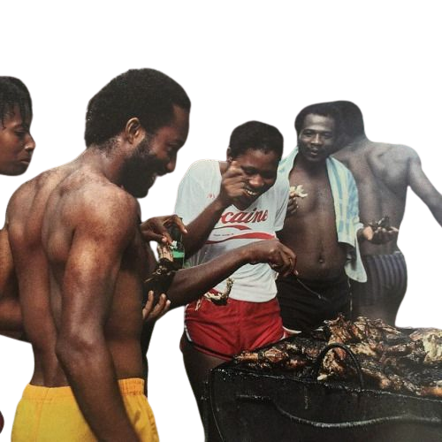

Our story
Black hair care is not the problem.
The systems around it are. BHEP explores how racism shapes the safety of Black hair care, from product ingredients and beauty standards to salon environments and cumulative environmental exposures.
Our mission
Advance health equity and environmental justice by addressing the impact of racism on the safety of Black hair care.
Our vision
A future where Black people can care for and express their hair without compromising their health.
